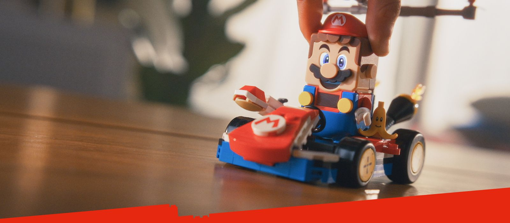
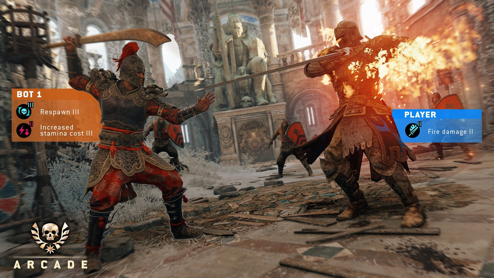
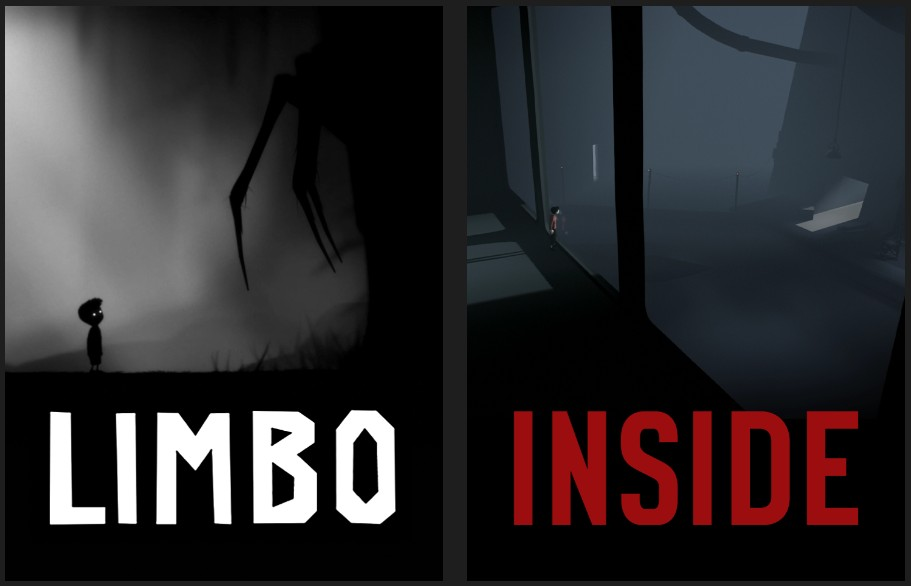

Crafting Meaningful Play Systems
Game designer and leader with 18+ years shipping titles across indie, AAA, and interactive play. Expertise in holistic game systems, player psychology, rapid prototyping in ambiguous environments, and mentoring teams. Currently in transition from The LEGO Group (February 2026) — open to principal roles in community-driven, innovative studios.
Explore WorkSelected Work
Key projects highlighting systems design, prototyping leadership, and player-focused impact.

LEGO Super Mario & Smart Play
Led prototyping and product ownership for hybrid digital-physical systems with sensors, apps, and real-time feedback.
Role & impact: Shaped product direction, navigated accelerated cycles, and validated adaptive play experiences through cross-functional collaboration and rapid iteration.

For Honor Arcade Mode
Architected progression, AI, scoring, rewards, and balance for extended engagement in a co-dev live-service title.
Role & impact: Designed and shipped Arcade Mode from concept to launch, focusing on player motivations and solo/co-op coherence in a complex Ubisoft collaboration.

LIMBO & INSIDE
Designed puzzles, levels, mechanics, and Lua scripting for atmospheric, critically acclaimed indie experiences.
Role & impact: Iterated mechanics and performance in small, collaborative teams, delivering intuitive player psychology and polished pacing.
Skills & Expertise
Core competencies developed across indie, AAA, and interactive toy projects — focused on creating coherent, engaging, and long-term player experiences.
Design
- Holistic Game Systems & Economies
- Player Psychology & Motivations
- Rapid Prototyping & Iteration in Ambiguity
- Metagame, Progression & Balance Design
- Hardware-Software Integration for Hybrid Play
Leadership
- Mentoring Designers & Engineers
- Cross-Functional Team Alignment
- Agile Delivery & Backlog Prioritization
- Fostering Experimental, Learning Culture
- Knowledge Sharing Across Organizations
Technical & Process
- Unity3D, Lua Scripting & Tools
- Playtesting, Feedback Synthesis & Validation
- Live Operations Foundations & Long-term Engagement
- Performance Optimization & QA Processes
About Peter Buchardt
I've spent over 18 years working with games and interactive experiences — from scripting small point-and-click titles early on, through designing atmospheric puzzles at Playdead (LIMBO, INSIDE), building systemic modes at Studio Gobo (For Honor Arcade, Hyper Scape), to leading prototyping and product ownership at The LEGO Group on projects like LEGO Super Mario and digital-physical play experiments.
My focus has consistently been on creating coherent systems that respect player motivations, iterating quickly under uncertainty, and helping teams grow through mentorship and open collaboration. After nearly seven years at LEGO — including four in leadership roles — I'm now in a transition period (February 2026) and looking for the next challenge in a remote-first, player-community oriented studio.
I live in Vejle, Denmark with my wife and daughter. Family life and balance remain important priorities, especially since our daughter's rare genetic condition reshaped our perspective on meaningful work and time.
Contact
Email: peter@buchardt.dk
LinkedIn: linkedin.com/in/peter-buchardt
Open to conversations about principal game design roles, remote collaboration, and building games that create real connections.